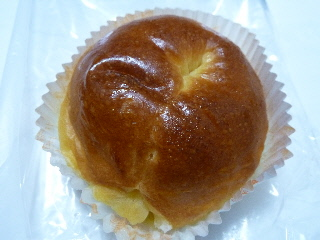
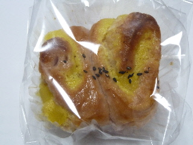
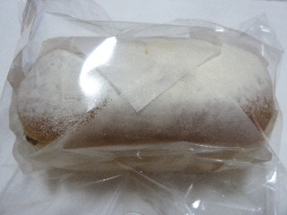
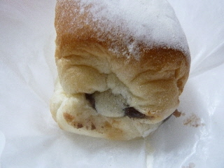
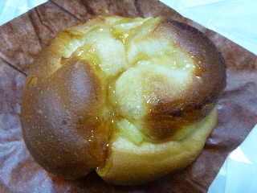
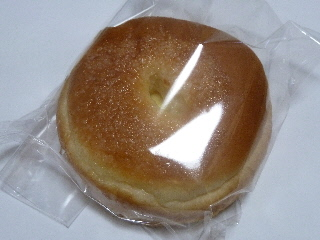

ラピタ本店のシュガーバターロール
2015/12/31
外見は砂糖っぽくないですが、中に甘いのが入っていました。

カップにはいっているだけあって、パンの中はしっとりとしていて甘かったです。
美味しかった。
今日は100円で販売していたのでお得でした。
島根県出雲市今市町87
2015/12/31
外見は砂糖っぽくないですが、中に甘いのが入っていました。

カップにはいっているだけあって、パンの中はしっとりとしていて甘かったです。
美味しかった。
今日は100円で販売していたのでお得でした。
2015/12/01
今日は火曜日なので、ラピタは火曜市でした。
なのでパンが100円で販売してました。
税込108円じゃなくて、税込100円です。お得ですね。

サツマイモのパンを買いました。
軽くて柔らかいパンでした。
2014/08/10
食パンの形をしたあんパンです。
商品名はアンパン食パンだったか、食パンあんパンだったかよく覚えていません。

ふっくら柔らかとしたパンに、アンが入っていました。

横から見るとこんな感じです。
アンパンみたいに、アンが真ん中にドーンある感じではなく、食パンにアンのすじが何本か入っていました。
餡の分量があんぱんよりも少ないので、マイルドな甘さでした。
パンの味もアンパンの味も楽しめました。
税込134円でした。
2014/05/04
ラピタ本店でホットケーキスタイルってパンがありました。
ちょっと前に流行ったパンケーキって言い方を使ってないところがなんかいいですね。

ふわっとしたパンにカスタードクリームとシロップがかかってて、ホットケーッキっぽい味がしました。
ふんわり甘いホーットケーキは美味しいです。
好きな味でした。
2013/10/06
クリームが沢山入ったクリームパンですね。

真ん中のあなからちらっと見えますが、やわらかくてトロトロな感じのクリームが本当に沢山入っていました。
シュークリームに少し近い感じがしましたけど、クリームパンはクリームパンだなーってちょっと感心しました。
JAしまねが運営するスーパー「ラピタ」内のパンコーナーです。